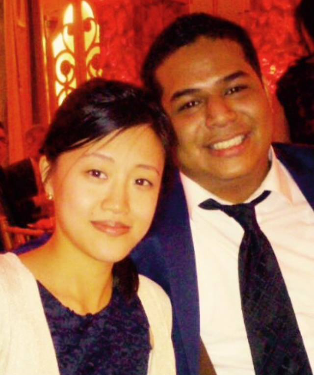

This is me..... about two decades ago. A kid from Queens, NY, born from an Ecuadorian mom and Chinese father who worked hard to plant seeds in this great country. We had a humble apartment in Elmhurst, NY where I grew up in the middle of the diverse melting pot. I was exposed to the multicultural dance that is the immigrant experience and I've experienced firsthand just the importance of working hard and getting an education. I grew up during the N64 era, (YAY) and was familiar with the dawn of the modern tech boom. Funny enough, I never had a computer. We had a sample desktop, but it very limited on its functionalities and I honestly never used it. Mostly because my older sister was hogging it for AOl Instant Messenger. My hobbies were different, I enjoyed tearing things apart and playing with motors and batteries. I enjoyed building little inventions such as; fans, toy boats and robot dogs (it wasn't very high tech). So from an early childhood I was definitely a tech person, but I didn't really know how apparent it would be until later on.
A few years past the awkward high school years and the college era, I started dating my fiance and working sales jobs where I learned a great deal about marketing and communication skills in a high pressure environment. This solidified my ability to meet deadlines and handle a lot of work at once. During the post-college years I was doing media and event work on the side helping politicians record video ads and I would also work conferences at the Jacob Javits Center. In that time, I would continue to tinker and mess with computers on the hardware end. Building a Hackintosh (fake Mac Pro) installing the OSX operating system on PC hardware was a fun accomplishment at the time. After this I started getting into the idea of learning web developments to build websites. I started learning mostly through tutorials on YouTube and what not.
After these years of dancing around the idea, I decided to take a Team Treehouse and Codecademy course on web development so that I could further work on media and web projects to help make people's lives much better. I am currently working on a side project that will allow people to understand politics from a simplified standpoint that explains legislation and its estimated effects on the system versus its intended effect. This is political estimation which operates like an open dialogue forum between users. Another project is an education app that may be used as a tool to introduce kids to virtual reality technology using the smartphone. My goal is to take the poor kid from Queens to Paris to see what life is like on the other side of the planet. My goal is to show American kids what living conditions people live with in Uganda. I would like to educate people to see what personal accounts and experience feel like in order to fully grasp concepts that many of us don't face day to day. Some things that come to mind are the way that indigenous people live in the South American rainforests, another would be the life of a rice farmer in China. I want to connect us via the web on a more personal level.

This is my beautiful fiance. Honey, I love you endlessly and thank you for supporting me for the last 7 years. They have been the best years of my life. Aside from the N64 years, they were cool too.
Please note: I am currently working on several projects which implement web media technology into political legislation for the future generations to come.
Web media technology will benefit many facets of government such as: education, healthcare and crime reform. Our goal is to make a more efficient government.